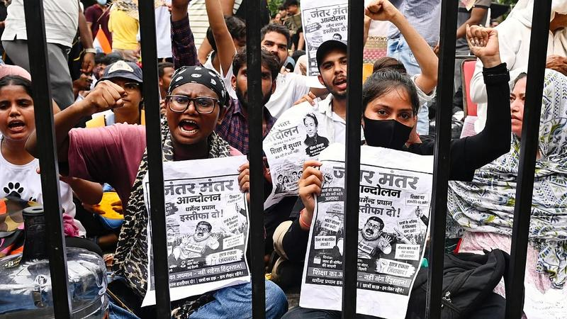

जंतर-मंतर: महिला पत्रकारों पर यौन हमले के आरोप के बाद दिल्ली पुलिस ने मामला क्राइम ब्रांच को सौंपा - BBC

जंतर-मंतर — प्रदर्शन के दौरान महिला पत्रकारों पर हमले के आरोप, क्राइम ब्रांच करेगी जांच
04 Oct 2026, 03:33 PM
जंतर-मंतर: महिला पत्रकारों पर यौन हमले के आरोप के बाद दिल्ली पुलिस ने मामला क्राइम ब्रांच को सौंपा BBCटीएमसी की पूर्व सांसद कोयल मल्लिक को बीजेपी ने बनाया राज्यसभा उम्मीदवार BBCजंतर-मंतर पर प्रदर्शन के दौरान 3 महिला पत्रकारों ने लगाया यौन उत्पीड़न का आरोप, क्राइम ब्रांच करेगी जांच Aaj Takदिल्ली पुलिस पर 3 महिला पत्रकारों से बदसलूकी का आरोप: मामले की जांच क्राइम ब्रांच को सौंपी; दावा- सीने पर ह... Dainik Bhaskar'दरिंदे को क्यों बचा रहे'; दिल्ली ACP के खिलाफ FIR पर अड़े CJP के सौरभ दास, अल्टीमेटम भी दिया, Ncr Hindi News Hindustan